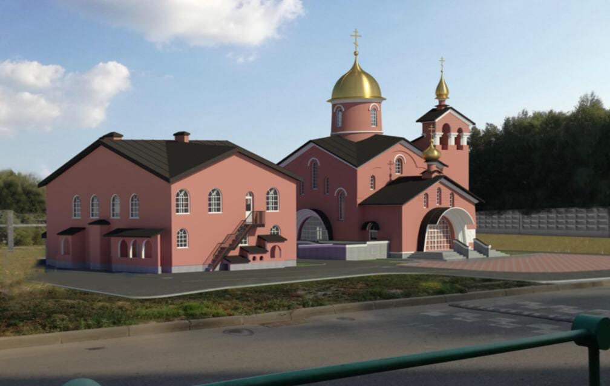

Строительство Храма

«Человек милосердный благотворит душе своей» (Притч. 11.17), – говорит премудрый Соломон.
В августе 2020 года началось строительство храмового комплекса святого великомученика Георгия в Московском.
Храм строится исключительно на ваши пожертвования. Ваша лепта – это неугасимая лампада церковной молитвы о Вас и Ваших близких.
Во всех храмах за каждым богослужением возносятся молитвы о строителях и благотворителях. Их имена - в основании будущего Дома Божьего на земле!
Вы можете внести пожертвование на именной кирпичик в стене будущего храма. Можно будет указать имя кого-либо из ваших близких, не только о здравии, но и о упокоении тех, кого уже нет с нами здесь, на земле.
Храм — это лучшее наследие, которое мы можем оставить нашим детям и внукам!
Образование
С открытием временного храма святителя Спиридона, епископа Тримифунтского при храмовом комплексе святого великомученика Георгия в Московском г. Москвы 21 октября 2017 года начала действовать приходская воскресная школа для детей.
Основными целями и задачами воскресной школы являются:
-воспитание детей на христианских принципах;
-обучение основам христианского вероучения;
-привитие навыков церковной жизни;
-сплочение детей прихода между собой, обучение их взаимовыручке, взаимопониманию;
-развитие творческих способностей.
Православный календарь
{% for event in events %}
{{ event.date }}
{{ event.events }}
{% endfor %}
Именины сегодня
{{ name_days }}